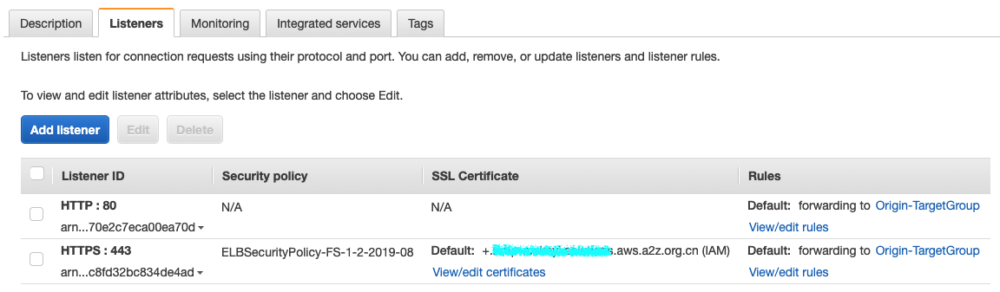
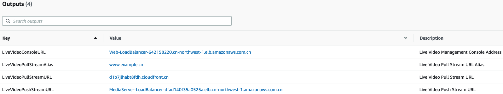
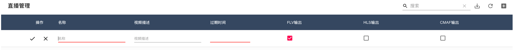
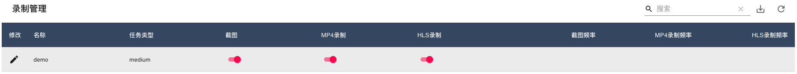

<!doctype html>
<html lang="zh" class="no-js">
  <head>
    
      <meta charset="utf-8">
      <meta name="viewport" content="width=device-width,initial-scale=1">
      
      
      
      
        <link rel="canonical" href="https://example.com/">
      
      <link rel="icon" href="assets/images/favicon.png">
      <meta name="generator" content="mkdocs-1.2.2, mkdocs-material-7.2.6">
    
    
      
        <title>基于无服务架构的直播和点播方案 部署文档</title>
      
    
    
      <link rel="stylesheet" href="assets/stylesheets/main.802231af.min.css">
      
        
        <link rel="stylesheet" href="assets/stylesheets/palette.3f5d1f46.min.css">
        
      
    
    
    
      
        
        <link rel="preconnect" href="https://fonts.gstatic.com" crossorigin>
        <link rel="stylesheet" href="https://fonts.googleapis.com/css?family=Roboto:300,400,400i,700%7CRoboto+Mono&display=fallback">
        <style>:root{--md-text-font-family:"Roboto";--md-code-font-family:"Roboto Mono"}</style>
      
    
    
    
    
      


    
    
  </head>
  
  
    
    
    
    
    
    <body dir="ltr" data-md-color-scheme="" data-md-color-primary="none" data-md-color-accent="none">
  
    
    <script>function __prefix(e){return new URL(".",location).pathname+"."+e}function __get(e,t=localStorage){return JSON.parse(t.getItem(__prefix(e)))}</script>
    
    <input class="md-toggle" data-md-toggle="drawer" type="checkbox" id="__drawer" autocomplete="off">
    <input class="md-toggle" data-md-toggle="search" type="checkbox" id="__search" autocomplete="off">
    <label class="md-overlay" for="__drawer"></label>
    <div data-md-component="skip">
      
        
        <a href="#en" class="md-skip">
          跳转至
        </a>
      
    </div>
    <div data-md-component="announce">
      
    </div>
    
      <header class="md-header" data-md-component="header">
  <nav class="md-header__inner md-grid" aria-label="Header">
    <a href="." title="基于无服务架构的直播和点播方案 部署文档" class="md-header__button md-logo" aria-label="基于无服务架构的直播和点播方案 部署文档" data-md-component="logo">
      
  
  <svg xmlns="http://www.w3.org/2000/svg" viewBox="0 0 24 24"><path d="M12 8a3 3 0 0 0 3-3 3 3 0 0 0-3-3 3 3 0 0 0-3 3 3 3 0 0 0 3 3m0 3.54C9.64 9.35 6.5 8 3 8v11c3.5 0 6.64 1.35 9 3.54 2.36-2.19 5.5-3.54 9-3.54V8c-3.5 0-6.64 1.35-9 3.54z"/></svg>

    </a>
    <label class="md-header__button md-icon" for="__drawer">
      <svg xmlns="http://www.w3.org/2000/svg" viewBox="0 0 24 24"><path d="M3 6h18v2H3V6m0 5h18v2H3v-2m0 5h18v2H3v-2z"/></svg>
    </label>
    <div class="md-header__title" data-md-component="header-title">
      <div class="md-header__ellipsis">
        <div class="md-header__topic">
          <span class="md-ellipsis">
            基于无服务架构的直播和点播方案 部署文档
          </span>
        </div>
        <div class="md-header__topic" data-md-component="header-topic">
          <span class="md-ellipsis">
            
              部署文档
            
          </span>
        </div>
      </div>
    </div>
    
    
      <div class="md-header__option">
        <div class="md-select">
          
          <button class="md-header__button md-icon" aria-label="Select language">
            <svg xmlns="http://www.w3.org/2000/svg" viewBox="0 0 24 24"><path d="m12.87 15.07-2.54-2.51.03-.03A17.52 17.52 0 0 0 14.07 6H17V4h-7V2H8v2H1v2h11.17C11.5 7.92 10.44 9.75 9 11.35 8.07 10.32 7.3 9.19 6.69 8h-2c.73 1.63 1.73 3.17 2.98 4.56l-5.09 5.02L4 19l5-5 3.11 3.11.76-2.04M18.5 10h-2L12 22h2l1.12-3h4.75L21 22h2l-4.5-12m-2.62 7 1.62-4.33L19.12 17h-3.24z"/></svg>
          </button>
          <div class="md-select__inner">
            <ul class="md-select__list">
              
                <li class="md-select__item">
                  <a href="/aws-serverless-video-streaming/en/" hreflang="en" class="md-select__link">
                    English
                  </a>
                </li>
                
                <li class="md-select__item">
                  <a href="/aws-serverless-video-streaming/zh/" hreflang="zh" class="md-select__link">
                    中文
                  </a>
                </li>
                
            </ul>
          </div>
        </div>
      </div>
    
    
      <label class="md-header__button md-icon" for="__search">
        <svg xmlns="http://www.w3.org/2000/svg" viewBox="0 0 24 24"><path d="M9.5 3A6.5 6.5 0 0 1 16 9.5c0 1.61-.59 3.09-1.56 4.23l.27.27h.79l5 5-1.5 1.5-5-5v-.79l-.27-.27A6.516 6.516 0 0 1 9.5 16 6.5 6.5 0 0 1 3 9.5 6.5 6.5 0 0 1 9.5 3m0 2C7 5 5 7 5 9.5S7 14 9.5 14 14 12 14 9.5 12 5 9.5 5z"/></svg>
      </label>
      
<div class="md-search" data-md-component="search" role="dialog">
  <label class="md-search__overlay" for="__search"></label>
  <div class="md-search__inner" role="search">
    <form class="md-search__form" name="search">
      <input type="text" class="md-search__input" name="query" aria-label="搜索" placeholder="搜索" autocapitalize="off" autocorrect="off" autocomplete="off" spellcheck="false" data-md-component="search-query" required>
      <label class="md-search__icon md-icon" for="__search">
        <svg xmlns="http://www.w3.org/2000/svg" viewBox="0 0 24 24"><path d="M9.5 3A6.5 6.5 0 0 1 16 9.5c0 1.61-.59 3.09-1.56 4.23l.27.27h.79l5 5-1.5 1.5-5-5v-.79l-.27-.27A6.516 6.516 0 0 1 9.5 16 6.5 6.5 0 0 1 3 9.5 6.5 6.5 0 0 1 9.5 3m0 2C7 5 5 7 5 9.5S7 14 9.5 14 14 12 14 9.5 12 5 9.5 5z"/></svg>
        <svg xmlns="http://www.w3.org/2000/svg" viewBox="0 0 24 24"><path d="M20 11v2H8l5.5 5.5-1.42 1.42L4.16 12l7.92-7.92L13.5 5.5 8 11h12z"/></svg>
      </label>
      <nav class="md-search__options" aria-label="Search">
        
        <button type="reset" class="md-search__icon md-icon" aria-label="Clear" tabindex="-1">
          <svg xmlns="http://www.w3.org/2000/svg" viewBox="0 0 24 24"><path d="M19 6.41 17.59 5 12 10.59 6.41 5 5 6.41 10.59 12 5 17.59 6.41 19 12 13.41 17.59 19 19 17.59 13.41 12 19 6.41z"/></svg>
        </button>
      </nav>
      
        <div class="md-search__suggest" data-md-component="search-suggest"></div>
      
    </form>
    <div class="md-search__output">
      <div class="md-search__scrollwrap" data-md-scrollfix>
        <div class="md-search-result" data-md-component="search-result">
          <div class="md-search-result__meta">
            正在初始化搜索引擎
          </div>
          <ol class="md-search-result__list"></ol>
        </div>
      </div>
    </div>
  </div>
</div>
    
    
      <div class="md-header__source">
        
<a href="https://github.com/aws-samples/aws-serverless-video-streaming/" title="前往 GitHub 仓库" class="md-source" data-md-component="source">
  <div class="md-source__icon md-icon">
    
    <svg xmlns="http://www.w3.org/2000/svg" viewBox="0 0 448 512"><path d="M439.55 236.05 244 40.45a28.87 28.87 0 0 0-40.81 0l-40.66 40.63 51.52 51.52c27.06-9.14 52.68 16.77 43.39 43.68l49.66 49.66c34.23-11.8 61.18 31 35.47 56.69-26.49 26.49-70.21-2.87-56-37.34L240.22 199v121.85c25.3 12.54 22.26 41.85 9.08 55a34.34 34.34 0 0 1-48.55 0c-17.57-17.6-11.07-46.91 11.25-56v-123c-20.8-8.51-24.6-30.74-18.64-45L142.57 101 8.45 235.14a28.86 28.86 0 0 0 0 40.81l195.61 195.6a28.86 28.86 0 0 0 40.8 0l194.69-194.69a28.86 28.86 0 0 0 0-40.81z"/></svg>
  </div>
  <div class="md-source__repository">
    GitHub
  </div>
</a>
      </div>
    
  </nav>
</header>
    
    <div class="md-container" data-md-component="container">
      
      
        
      
      <main class="md-main" data-md-component="main">
        <div class="md-main__inner md-grid">
          
            
              
              <div class="md-sidebar md-sidebar--primary" data-md-component="sidebar" data-md-type="navigation" >
                <div class="md-sidebar__scrollwrap">
                  <div class="md-sidebar__inner">
                    


<nav class="md-nav md-nav--primary" aria-label="Navigation" data-md-level="0">
  <label class="md-nav__title" for="__drawer">
    <a href="." title="基于无服务架构的直播和点播方案 部署文档" class="md-nav__button md-logo" aria-label="基于无服务架构的直播和点播方案 部署文档" data-md-component="logo">
      
  
  <svg xmlns="http://www.w3.org/2000/svg" viewBox="0 0 24 24"><path d="M12 8a3 3 0 0 0 3-3 3 3 0 0 0-3-3 3 3 0 0 0-3 3 3 3 0 0 0 3 3m0 3.54C9.64 9.35 6.5 8 3 8v11c3.5 0 6.64 1.35 9 3.54 2.36-2.19 5.5-3.54 9-3.54V8c-3.5 0-6.64 1.35-9 3.54z"/></svg>

    </a>
    基于无服务架构的直播和点播方案 部署文档
  </label>
  
    <div class="md-nav__source">
      
<a href="https://github.com/aws-samples/aws-serverless-video-streaming/" title="前往 GitHub 仓库" class="md-source" data-md-component="source">
  <div class="md-source__icon md-icon">
    
    <svg xmlns="http://www.w3.org/2000/svg" viewBox="0 0 448 512"><path d="M439.55 236.05 244 40.45a28.87 28.87 0 0 0-40.81 0l-40.66 40.63 51.52 51.52c27.06-9.14 52.68 16.77 43.39 43.68l49.66 49.66c34.23-11.8 61.18 31 35.47 56.69-26.49 26.49-70.21-2.87-56-37.34L240.22 199v121.85c25.3 12.54 22.26 41.85 9.08 55a34.34 34.34 0 0 1-48.55 0c-17.57-17.6-11.07-46.91 11.25-56v-123c-20.8-8.51-24.6-30.74-18.64-45L142.57 101 8.45 235.14a28.86 28.86 0 0 0 0 40.81l195.61 195.6a28.86 28.86 0 0 0 40.8 0l194.69-194.69a28.86 28.86 0 0 0 0-40.81z"/></svg>
  </div>
  <div class="md-source__repository">
    GitHub
  </div>
</a>
    </div>
  
  <ul class="md-nav__list" data-md-scrollfix>
    
      
      
      

  
  
    
  
  
    <li class="md-nav__item md-nav__item--active">
      
      <input class="md-nav__toggle md-toggle" data-md-toggle="toc" type="checkbox" id="__toc">
      
      
        
      
      
        <label class="md-nav__link md-nav__link--active" for="__toc">
          部署文档
          <span class="md-nav__icon md-icon"></span>
        </label>
      
      <a href="." class="md-nav__link md-nav__link--active">
        部署文档
      </a>
      
        
<nav class="md-nav md-nav--secondary" aria-label="目录">
  
  
  
    
  
  
    <label class="md-nav__title" for="__toc">
      <span class="md-nav__icon md-icon"></span>
      目录
    </label>
    <ul class="md-nav__list" data-md-component="toc" data-md-scrollfix>
      
        <li class="md-nav__item">
  <a href="#_1" class="md-nav__link">
    功能：
  </a>
  
</li>
      
        <li class="md-nav__item">
  <a href="#_2" class="md-nav__link">
    方案应用场景：
  </a>
  
</li>
      
        <li class="md-nav__item">
  <a href="#_3" class="md-nav__link">
    方案特点：
  </a>
  
</li>
      
        <li class="md-nav__item">
  <a href="#_4" class="md-nav__link">
    方案架构：
  </a>
  
    <nav class="md-nav" aria-label="方案架构：">
      <ul class="md-nav__list">
        
          <li class="md-nav__item">
  <a href="#_5" class="md-nav__link">
    架构说明：
  </a>
  
</li>
        
      </ul>
    </nav>
  
</li>
      
        <li class="md-nav__item">
  <a href="#_6" class="md-nav__link">
    安装与部署：
  </a>
  
</li>
      
        <li class="md-nav__item">
  <a href="#_7" class="md-nav__link">
    创建直播频道
  </a>
  
</li>
      
        <li class="md-nav__item">
  <a href="#web" class="md-nav__link">
    （可选）演示web使用说明：
  </a>
  
</li>
      
        <li class="md-nav__item">
  <a href="#security" class="md-nav__link">
    Security
  </a>
  
</li>
      
        <li class="md-nav__item">
  <a href="#license" class="md-nav__link">
    License
  </a>
  
</li>
      
    </ul>
  
</nav>
      
    </li>
  

    
      
      
      

  
  
  
    <li class="md-nav__item">
      <a href="faq/" class="md-nav__link">
        常见问题
      </a>
    </li>
  

    
  </ul>
</nav>
                  </div>
                </div>
              </div>
            
            
              
              <div class="md-sidebar md-sidebar--secondary" data-md-component="sidebar" data-md-type="toc" >
                <div class="md-sidebar__scrollwrap">
                  <div class="md-sidebar__inner">
                    
<nav class="md-nav md-nav--secondary" aria-label="目录">
  
  
  
    
  
  
    <label class="md-nav__title" for="__toc">
      <span class="md-nav__icon md-icon"></span>
      目录
    </label>
    <ul class="md-nav__list" data-md-component="toc" data-md-scrollfix>
      
        <li class="md-nav__item">
  <a href="#_1" class="md-nav__link">
    功能：
  </a>
  
</li>
      
        <li class="md-nav__item">
  <a href="#_2" class="md-nav__link">
    方案应用场景：
  </a>
  
</li>
      
        <li class="md-nav__item">
  <a href="#_3" class="md-nav__link">
    方案特点：
  </a>
  
</li>
      
        <li class="md-nav__item">
  <a href="#_4" class="md-nav__link">
    方案架构：
  </a>
  
    <nav class="md-nav" aria-label="方案架构：">
      <ul class="md-nav__list">
        
          <li class="md-nav__item">
  <a href="#_5" class="md-nav__link">
    架构说明：
  </a>
  
</li>
        
      </ul>
    </nav>
  
</li>
      
        <li class="md-nav__item">
  <a href="#_6" class="md-nav__link">
    安装与部署：
  </a>
  
</li>
      
        <li class="md-nav__item">
  <a href="#_7" class="md-nav__link">
    创建直播频道
  </a>
  
</li>
      
        <li class="md-nav__item">
  <a href="#web" class="md-nav__link">
    （可选）演示web使用说明：
  </a>
  
</li>
      
        <li class="md-nav__item">
  <a href="#security" class="md-nav__link">
    Security
  </a>
  
</li>
      
        <li class="md-nav__item">
  <a href="#license" class="md-nav__link">
    License
  </a>
  
</li>
      
    </ul>
  
</nav>
                  </div>
                </div>
              </div>
            
          
          <div class="md-content" data-md-component="content">
            <article class="md-content__inner md-typeset">
              
                
                  <a href="https://github.com/aws-samples/aws-serverless-video-streaming/edit/master/docs/index.md" title="编辑此页" class="md-content__button md-icon">
                    <svg xmlns="http://www.w3.org/2000/svg" viewBox="0 0 24 24"><path d="M20.71 7.04c.39-.39.39-1.04 0-1.41l-2.34-2.34c-.37-.39-1.02-.39-1.41 0l-1.84 1.83 3.75 3.75M3 17.25V21h3.75L17.81 9.93l-3.75-3.75L3 17.25z"/></svg>
                  </a>
                
                
                <!--
SPDX-FileCopyrightText: 2021 Amazon.com， Inc. or its affiliates. All Rights Reserved.

SPDX-License-Identifier: MIT-0 License
-->

<h1 id="en">基于无服务架构的直播和点播方案（<a href="./README_en.md">En</a>)</h1>
<p>该方案基于Amazon ECS，API Gateway，DynamoDB等托管服务，构建了包含视频推送，转码，水印，点播和分发等功能的一站式视频服务平台，具有服务可靠，资源弹性，部署简易等特点，方案涉及的所有服务通过Amazon CloudFormation实现一键部署，其中数据流向如下：</p>
<p></p>
<h2 id="_1">功能：</h2>
<ul>
<li>推流：提供推流地址和海量设备的接入，支持主流RTMP协议推流；支持OBS等常见的第三方推流软件，支持常见的第三方RTMP推流硬件（编码器或盒子）；</li>
<li>视频播放：支持HTTP-FLV（2秒延迟）和HLS/CMAF（大于10秒延迟）三种回放协议；支持常见的第三方FLV，RTMP，HLS播放器VLC，FFPLAY；</li>
<li>视频处理功能：视频转码，视频录制，视频截图，直播水印，直播中继等；</li>
<li>视频频存储和点播：视频存储（可做冷/热分层），支持录制hls分片点播；</li>
<li>直播控制台：提供API管理和图形化管理；</li>
<li>地址管理：统一的推流域名，播流域名管理；</li>
<li>安全：推流鉴权支持推流URL鉴权，播放鉴权利用CloudFront签名URL支持播放URL防盗链以及播放鉴权；</li>
</ul>
<h2 id="_2">方案应用场景：</h2>
<ul>
<li>普通/低延迟直播：满足中，小型客户的普通和低延迟直播需求，如游戏，电商，媒体，教育等行业的直播；</li>
<li>大并发上行视频云存储：将监控设备，智能设备通过标准化协议接入，在云端进行监控流的收录存储，媒体处理；</li>
</ul>
<h2 id="_3">方案特点：</h2>
<ul>
<li>无服务，端到端：基于云原生无服务架构，无需进行容量规划，减少运维负担，轻松扩展，按需付费；</li>
<li>简单，开放，集成：方案使用简单，不用复杂的配置，满足非专业客户直播推，转，拉的需求；具备很好的开放性，同Amazon托管服务无缝集成；</li>
<li>大容量，高负载：基于ECS弹性架构，根据推拉流的负载弹性伸缩，支持海量的视频流接入和拉取；</li>
<li>自助化管理：可以通过控制台和API对直播流元数据进行管理，也可以根据需求设置适合您业务场景的直播功能，如录制，转码，截图，水印等</li>
<li>一键部署：通过CloudFormation实现方案的一键部署（北京，宁夏区域）</li>
</ul>
<p></p>
<h2 id="_4">方案架构：</h2>
<p></p>
<h3 id="_5">架构说明：</h3>
<p><strong>视频接入服务：</strong>
高可用代理服务器集群，通过ECS Service保证节点数量，提供RTMP推流地址和海量设备的接入，采用轻量级HAPoxy，支持rtmp，提供统一的推流地址：</p>
<pre><code>rtmp://&lt;DNS Name&gt;/stream/&lt;stream key&gt;
</code></pre>
<p><strong>视频网关服务：</strong>
基于Node media server实现高性能轻量级rtmp server，支持rtmp，rtmps推流接入，维护推流状态并将保存元数据信息，基于元数据模块的会话管理，基于事件回调维护推流客户端状态，检测客户端上下线，并根据状态调度ECS任务</p>
<p><strong>元数据管理：</strong>
使用dynamodb管理视频流元数据，通过API gateway提供元数据的CRUD管理的Restful API；动态设置视频流处理参数；自动生成唯一推流channel;通过API得到推流和拉流URL</p>
<p><strong>视频处理服务：</strong>
基于Fargate实现视频转码，直播，录制，分片等功能，ECS Server自动管理流媒体服务器集群的数量和弹性伸缩，提供如下功能：
- 高性能，基于Ngnix http server
- 视频流进行实时编码，转码
- 视频和图片分片和S3存储，自定义分片时间和转码参数，
- 支持HTTP-FLV（2秒延迟）和HLS\CMAF（10秒延迟）
- 动态调整参数，轻松与Amazon服务集成</p>
<p><strong>视频分发服务：</strong>
- ECS Server自动管理视频流分发服务器集群的数量和弹性伸缩，拉流路径：Route53-&gt; CloudFront-&gt; ALB-&gt; 视频流分发服务器-&gt; 视频流处理服务器
- 通过自动寻址实现多路输入流到一路输出
- 内置Nginx缓存，尽可能减少服务器上的负载，避免惊群效应
- 利用CloudFront优化下行拉流体验，通过signed URL实现视频的安全访问</p>
<p><strong>演示web：</strong>
<strong>注意该web界面仅作演示用途，默认方案不会创建该web界面，需要在CloudFormation中的参数显式指定</strong>

演示web功能包括：
- 域名配置
- 直播管理
- 视频录制
- 水印配置
- 视频中继
- 在线视频</p>
<h2 id="_6">安装与部署：</h2>
<p><strong>先决条件：</strong>
- 确保您有ICP备案的域名，点击<a href="https://www.amazonaws.cn/support/icp/?nc1=h_ls"><strong>这里</strong></a>了解如何进行ICP备案。</p>
<p>点击<a href="https://cn-north-1.console.amazonaws.cn/cloudformation/home?region=cn-north-1#/stacks/create/template?stackName=AWSVideoStreamingPlatform&amp;templateURL=https://aws-gcr-solutions.s3.cn-north-1.amazonaws.com.cn/serverless-video-streaming/v1.0.0/aws-serverless-video-streaming.main.template.yaml"><strong>这里</strong></a>跳转到对应的Amazon CloudFormation控制台（北京），点击下一步进行部署</p>
<p></p>
<p>点击下一步进行部署选项配置，其中InstallDemoConsole配置是否部署用户演示的web界面，默认为false，CNAME配置CloudFront所关联的CNAMEs，大陆用户需要使用备案域名进行关联，海外用户无此要求，默认为www.example.cn</p>
<p>[<strong>可选</strong>]在方案部署完毕之后，如果您希望通过HTTPS方式分发视频流以进一步增强安全性，则可以按照下列步骤来额外配置您的CloudFront和Elastic Load Balancer服务</p>
<ul>
<li>步骤一，获取您域名对应的SSL证书
安装certbot，执行如下命令（mac用户）</li>
</ul>
<pre><code>brew install certbot
sudo certbot certonly --manual --preferred-challenges dns -d &quot;*.&lt;your domain prefix&gt;.aws.a2z.org.cn&quot;
</code></pre>
<p>执行后界面提示类似信息如下：</p>
<pre><code>Please deploy a DNS TXT record under the name
_acme-challenge.&lt;your domain prefix&gt;.aws.a2z.org.cn with the following value:

8ZCAA6XvwLKK3MiGLRufX1p0_gIHnT-xxxx
</code></pre>
<p>按照提示“_acme-challenge.<your domain prefix>.aws.a2z.org.cn Route 53 TXT type entry and set the value to 8ZCAA6XvwLKK3MiGLRufX1p0_gIHnT-xxxx”将对应字符串添加到您管理的域名记录中，然后点击确认您将获取到签名证书，mac用户证书存放在/etc/letsencrypt/live/目录下</p>
<ul>
<li>步骤二，上传SSL证书到IAM</li>
</ul>
<pre><code>sudo aws iam upload-server-certificate \
--path '/cloudfront/' \
--server-certificate-name '+.rtmp-nx.keyi.solutions.aws.a2z.org.cn' \
--certificate-body file:///etc/letsencrypt/live/&lt;your domain prefix&gt;.aws.a2z.org.cn/cert.pem \
--private-key file:///etc/letsencrypt/live/&lt;your domain prefix&gt;.aws.a2z.org.cn/privkey.pem \
--certificate-chain file:///etc/letsencrypt/live/&lt;your domain prefix&gt;.aws.a2z.org.cn/chain.pem \
--profile xx --region cn-northwest-1
</code></pre>
<ul>
<li>步骤三，打开CloudFront控制台，找到您的distribution，然后点击General -&gt; Edit -&gt; Custom SSL Certificate (example.com) in "SSL Certificate” -&gt; 选择您在之前上传的SSL证书</li>
</ul>
<p></p>
<ul>
<li>步骤四，打开EC2控制台找到Load Balancer，找到您的前缀为origin的Load Balancer，然后点击Add listener -&gt; Default SSL certificate -&gt; 选择您在之前上传的SSL证书</li>
</ul>
<p>
</p>
<h2 id="_7">创建直播频道</h2>
<p>方案通过API Gateway提供的Restful API来对视频频道的元数据进行管理并集成到自己的应用和管理界面中。在方案部署完毕之后，跳转到前缀为VideoMetadata的nest stack，查看output选项以获取所创建的API Gateway的URL地址。</p>
<p></p>
<p>通过Curl或者Postman等工具对该URL地址进行POST操作以创建直播频道，其中request的主体内容如下所示</p>
<pre><code>{&quot;isFlv&quot;:true, &quot;isHls&quot;:true, &quot;isVideo&quot;:false, &quot;isImage&quot;:true, &quot;isMotion&quot;:false, &quot;isOnDemand&quot;:false, &quot;isCMAF&quot;:false, &quot;video_time&quot;:&quot;60&quot;, &quot;image_time&quot;:&quot;30&quot;, &quot;hls_time&quot;:&quot;2&quot;, &quot;hls_list_size&quot;:&quot;5&quot;, &quot;outdate&quot;:&quot;2022-12-09&quot;}
</code></pre>
<p>通过Curl创建直播频道</p>
<pre><code>curl -d '{&quot;isFlv&quot;:true, &quot;isHls&quot;:false, &quot;isVideo&quot;:true, &quot;isImage&quot;:false, &quot;isMotion&quot;:false, &quot;isOnDemand&quot;:false, &quot;isCMAF&quot;:false, &quot;video_time&quot;:&quot;60&quot;, &quot;image_time&quot;:&quot;30&quot;, &quot;hls_time&quot;:&quot;2&quot;, &quot;hls_list_size&quot;:&quot;5&quot;, &quot;outdate&quot;:&quot;2022-12-09&quot;}' -H &quot;Content-Type: application/json&quot; -X POST https://xxxxx.execute-api.cn-northwest-1.amazonaws.com.cn/Prod/videostream
</code></pre>
<p>通过Thunder Client创建直播频道，创建成功后会获取对应的返回信息</p>
<p></p>
<p>登陆到DynamoDB控制台，查看名为video-metadata的表项，可以看到对应的channel信息已经创建，记录下如图所示的channel id和key两个字符串.</p>
<p></p>
<p>将上述字符串按照如下格式进行拼接，用作后续视频推送的串流密钥</p>
<p><strong>串流密钥格式</strong></p>
<pre><code>&lt;id&gt;?sign=&lt;key&gt;
</code></pre>
<p><strong>范例如下：</strong></p>
<pre><code>70ef9b07-adbe-478d-b098-d7c8efd84a98?sign=1670371200-5db080c8cdca8764de881bc04e61e2b1
</code></pre>
<p>从CloudFormation控制台输出面板中获取推流域名，推流地址（其中的LiveVideoPushStreamURL）</p>
<p></p>
<p><strong>推流网址：</strong>
从CloudFormation控制台获取推流地址之后，按照以下方式拼接视频推送的RTMP地址：</p>
<pre><code>rtmp://&lt;LiveVideoPushStreamURL&gt;/stream/98724e64-bcd1-4887-af4a-60be440709aa?sign=1670544000-63497837275539bdb8e21800887e2db9
</code></pre>
<p>配置对应的推流软件如OBS来进行视频推送</p>
<p></p>
<p>其他配置如下所示：
- 编码器：x264
- 速率控制：CBR
- 比特率：1000 (或更低)
- 关键帧间隔（秒，0=自动）：2
- CPU Usage Preset (higher = less CPU) ：veryfast， 
- Tune：zerolatency</p>
<p>通过视频播放器（ffplayer）或浏览器查看视频</p>
<pre><code>ffplay http://&lt;LiveVideoPullStreamURL&gt;/98724e64-bcd1-4887-af4a-60be440709aa/live.flv

http://&lt;LiveVideoPullStreamURL&gt;/98724e64-bcd1-4887-af4a-60be440709aa/flv.html
</code></pre>
<h2 id="web">（可选）演示web使用说明：</h2>
<p><strong>注意该web界面仅作演示用途，默认方案不会创建该web界面，需要在CloudFormation中的参数显式指定</strong></p>
<p><strong>创建直播频道</strong></p>
<p>从CloudFormation控制台输出面板中，获取直播控制台地址，推流/拉流地址，拉流域名。</p>
<p></p>
<p>登陆进入直播控制台地址，点击“直播频道”右上角+创建直播频道，然后按照如下操作：
- 输入直播频道名称，描述和过期时间
- 选择视频输出格式，例如：HLS，FLV，CMAF
- 系统自动根据域名和过期时间生成签名推流地址</p>
<p></p>
<p><strong>获取推流地址和播放地址</strong></p>
<p>按照如下步骤操作：
- 点击箭头按钮，自动生成推流地址和播放地址
- 自动根据过期时间和私钥生成签名推流地址和推流二维码
- 自动生成HLS，FLV，CMAF拉流地址
- 点击对应输出的播放按钮，播放视频</p>
<p></p>
<p><strong>在线预览直播视频流</strong></p>
<p>按照如下步骤操作：
- 点击头像 按钮，显示直播视频浏览
- 自动生成视频流播放地址和二维码
- 根据不同的视频输出格式在线预览
- 直播推流成功后，大概需要35秒左右可在线看到直播流</p>
<p><strong>直播视频录制</strong></p>
<p>根据配置的录制规则对正在直播的视频进行录制和截图，按照如下步骤操作：
- 操作：点击修改按钮，修改直播视频录制的参数
- 录制格式：录制文件的格式，支持“JPG”“MP4”和”HLS”格式
- 存储位置:存储在自动生成的S3存储桶中（video-streaming-assets-assetsbucket开头）
- 参数：截图频率，MP4录制频率，HLS录制频率
- 任务类型：灵活选择转码任务类型，节省成本</p>
<p></p>
<p><strong>直播水印</strong></p>
<p>原始流视频画面添加上各种预设好的标志图片和文字，包括如下功能：
- 支持图片水印和文字水印
- 主要参数：包括水印位置和水印大小 ，文字及文字属性
- 图片水印参数：图片URL地址，图片高度，图片宽度，左右间距</p>
<p></p>
<p><strong>直播视频转码：</strong></p>
<p>将推送的直播流转码成多种分辨率和码率规格的视频流，包括如下功能：
- 适配不同播放终端；适配不同网络环境；降低分发成本
- 预置转码模板：支持选择视频画质，视频画质内置了常用的流畅，标清，高清和超清四种标准模板
- 任务类型：灵活选择转码任务类型，节省成本</p>
<p>转码模板的分辨率和码率如下所示：</p>
<table>
<thead>
<tr>
<th></th>
<th><strong>视频画质</strong></th>
<th><strong>分辨率</strong></th>
<th><strong>码率（Kbps）</strong></th>
</tr>
</thead>
<tbody>
<tr>
<td></td>
<td>流畅</td>
<td>640*360</td>
<td>400</td>
</tr>
<tr>
<td></td>
<td>标清</td>
<td>854*480</td>
<td>600</td>
</tr>
<tr>
<td></td>
<td>高清</td>
<td>1280*720</td>
<td>1000</td>
</tr>
<tr>
<td></td>
<td>超清</td>
<td>1920*1080</td>
<td>2000</td>
</tr>
</tbody>
</table>
<p></p>
<p><strong>直播中继：</strong></p>
<p>在直播视频流中继转发，包括如下功能：
- 通过视频relay自动把原始视频流推送到其他视频直播平台
- 实现国内和海外同步直播</p>
<p></p>
<h2 id="security">Security</h2>
<p>See <a href="CONTRIBUTING.md#security-issue-notifications">CONTRIBUTING</a> for more information.</p>
<h2 id="license">License</h2>
<p>This library is licensed under the MIT-0 License. See the LICENSE file.</p>
                
              
              
                


              
            </article>
          </div>
        </div>
        
      </main>
      
        
<footer class="md-footer">
  
    <nav class="md-footer__inner md-grid" aria-label="Footer">
      
      
        
        <a href="faq/" class="md-footer__link md-footer__link--next" aria-label="下一页: 常见问题" rel="next">
          <div class="md-footer__title">
            <div class="md-ellipsis">
              <span class="md-footer__direction">
                下一页
              </span>
              常见问题
            </div>
          </div>
          <div class="md-footer__button md-icon">
            <svg xmlns="http://www.w3.org/2000/svg" viewBox="0 0 24 24"><path d="M4 11v2h12l-5.5 5.5 1.42 1.42L19.84 12l-7.92-7.92L10.5 5.5 16 11H4z"/></svg>
          </div>
        </a>
      
    </nav>
  
  <div class="md-footer-meta md-typeset">
    <div class="md-footer-meta__inner md-grid">
      <div class="md-footer-copyright">
        
        Made with
        <a href="https://squidfunk.github.io/mkdocs-material/" target="_blank" rel="noopener">
          Material for MkDocs
        </a>
        
      </div>
      
    </div>
  </div>
</footer>
      
    </div>
    <div class="md-dialog" data-md-component="dialog">
      <div class="md-dialog__inner md-typeset"></div>
    </div>
    <script id="__config" type="application/json">{"base": ".", "features": ["tabs", "search.suggest", "search.highlight"], "translations": {"clipboard.copy": "\u590d\u5236", "clipboard.copied": "\u5df2\u590d\u5236", "search.config.lang": "ja", "search.config.pipeline": "trimmer, stemmer", "search.config.separator": "[\\uff0c\\u3002]+", "search.placeholder": "\u641c\u7d22", "search.result.placeholder": "\u952e\u5165\u4ee5\u5f00\u59cb\u641c\u7d22", "search.result.none": "\u6ca1\u6709\u627e\u5230\u7b26\u5408\u6761\u4ef6\u7684\u7ed3\u679c", "search.result.one": "\u627e\u5230 1 \u4e2a\u7b26\u5408\u6761\u4ef6\u7684\u7ed3\u679c", "search.result.other": "# \u4e2a\u7b26\u5408\u6761\u4ef6\u7684\u7ed3\u679c", "search.result.more.one": "1 more on this page", "search.result.more.other": "# more on this page", "search.result.term.missing": "Missing", "select.version.title": "Select version"}, "search": "assets/javascripts/workers/search.409db549.min.js", "version": null}</script>
    
    
      <script src="assets/javascripts/bundle.756773cc.min.js"></script>
      
    
  </body>
</html>